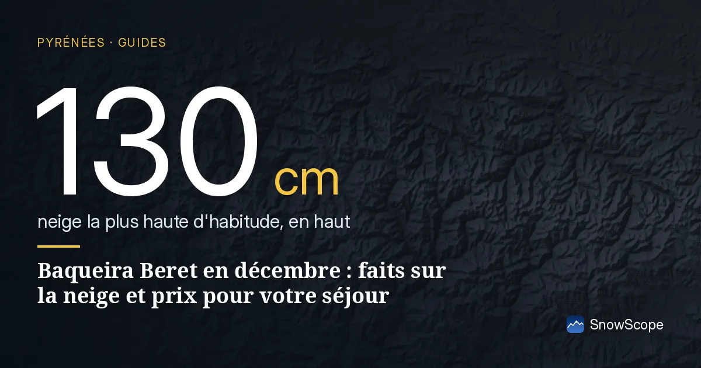
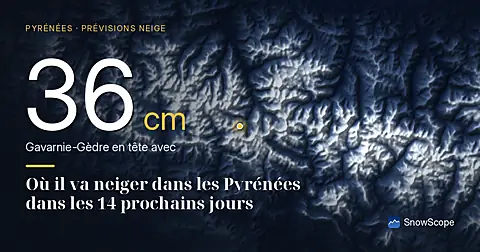

Baqueira Beret en décembre : faits sur la neige et prix pour votre séjour
Baqueira Beret, dans le Val d'Aran, est l'un des grands noms des Pyrénées, mais est-ce un bon pari pour décembre ? Notre historique de neige montre un début de saison modeste, donc la semaine choisie compte plus que d'habitude.
Consultez les prévisions neige en temps réel pour Baqueira Beret sur l'application SnowScopeHauteurs de neige, alertes poudreuse et carte 3D, gratuitement.
Le Val d'Aran et ses sommets
Baqueira Beret est située en Espagne et offre un vaste domaine à explorer. Le domaine skiable balisé compte 154 km de pistes et 36 remontées mécaniques.
La station s'étend du bas des remontées à 1 504 m jusqu'au sommet à 2 600 m, offrant un dénivelé de 1 096 m.

La neige en décembre en chiffres
En examinant notre historique d'enneigement de 46 hivers, de 1980-81 à 2025-26, l'épaisseur de neige en décembre est souvent assez faible en bas. À 1 504 m, l'épaisseur habituelle en décembre est de 8 cm, et celle du 15 décembre est de 9 cm. Un mois de décembre peu enneigé apporte 0 cm ou moins environ 1 hiver sur 10, tandis qu'un mois riche en neige peut atteindre 37 cm ou plus environ 1 hiver sur 10.
Plus haut, à mi-montagne à 2 052 m, l'épaisseur habituelle en décembre est de 20 cm, avec 19 cm le 15 décembre. Au sommet des remontées à 2 600 m, l'épaisseur habituelle en décembre est de 30 cm, et celle du 15 décembre est également de 30 cm. À cette altitude, un mois de décembre très enneigé atteint 77 cm ou plus environ 1 hiver sur 10.
Si l'on regarde la part des hivers avec 30 cm ou plus à mi-montagne, elle augmente au fil du mois : 22 pour cent du 1 au 7 décembre, 30 pour cent du 8 au 14 décembre, 35 pour cent du 15 au 21 décembre et 41 pour cent du 22 au 28 décembre. Au sommet, la part des hivers avec 30 cm ou plus est de 39 pour cent du 1 au 7 décembre, 46 pour cent du 8 au 14 décembre, 52 pour cent du 15 au 21 décembre et 59 pour cent du 22 au 28 décembre.
Le prix, vérifié
Les voyages au ski demandent un budget, regardons donc les coûts vérifiés sur le site officiel pour la saison 2026-27. Un forfait adulte 1 jour avec la carte rechargeable 'Baqueira Pass' coûte 70,00 €. Si vous achetez un 'Baqueira Ticket' adulte standard 1 jour, le prix est de 74,00 €. Pour un séjour plus long, un 'Baqueira Ticket' adulte 6 jours est au prix de 359,00 €.
Baqueira ou Astún-Candanchú
Il est utile de comparer Baqueira Beret avec Astún-Candanchú, une autre destination espagnole. Astún-Candanchú possède un domaine skiable balisé de 35 km de pistes et 17 remontées, avec des altitudes allant de 1 659 m à 2 272 m, pour un dénivelé de 613 m.
Dans notre historique d'enneigement pour Astún-Candanchú, la base à 1 659 m a une épaisseur habituelle en décembre de 18 cm et 13 cm le 15 décembre. Son sommet à 2 272 m a une épaisseur habituelle en décembre de 38 cm et 29 cm le 15 décembre. Pour les coûts à Astún-Candanchú, un forfait combiné adulte 1 jour acheté en ligne pour la saison 26-27 est à 54,50 EUR, tandis qu'au guichet il est à 59,50 EUR, et un forfait combiné adulte 5 jours acheté en ligne est à 237,00 EUR.
Première neige et tendance
Dans notre historique d'enneigement, le premier jour habituel de neige durable à la base est le 10 novembre. À mi-montagne, c'est le 8 novembre, et au sommet, elle arrive vers le 4 novembre.
En comparant les périodes passées, la moyenne de décembre à mi-montagne était de 17 cm au milieu des 15 premiers hivers (1980-81 à 1994-95) et de 20 cm au milieu des 15 derniers hivers (2011-12 à 2025-26). L'hiver dernier, en décembre 2025, la moyenne était de 9 cm à la base, 14 cm à mi-montagne et 19 cm au sommet.
La neige affiche actuellement 0 cm à la base et à mi-montagne, et 1 cm au sommet, avec 9 cm de neige fraîche attendus dans les 7 prochains jours au sommet. Les prévisions de neige fraîche sur deux semaines pour la mi-montagne et au-dessus prévoient une moyenne de 14 cm avec une fourchette de 6 cm à 22 cm.
Conseils aux skieurs
- Visez les dernières semaines de décembre, comme du 22 au 28 décembre, lorsque la part des hivers avec 30 cm ou plus atteint 59 pour cent au sommet.
- Séjournez plus haut autour de la mi-montagne et des sommets (2 052 m à 2 600 m) où les épaisseurs de neige naturelle sont plus fiables qu'à la base.
- Achetez la carte rechargeable 'Baqueira Pass' sur le site officiel pour obtenir le tarif journalier de 70,00 € au lieu de 74,00 €.
- Vérifiez toujours la bulletin local des avalanches avant de partir hors-piste, surtout en début de saison lorsque les couches de base sont fines.
Autres cartes (sites externes)
Références et crédits
- Baqueira Beret, official prices (tarifas), season 26-27 www.baqueira.es/es/tarifas
- Astún, official lift pass prices (tarifas 26-27) astun.com/forfaits/
- SnowScope, December snow at three heights and today's snow map snowscope.app/
À propos de ces chiffres
Chiffres de neige : historique SnowScope, 46 hivers passés (1980-81 à 2025-26) à trois altitudes de chaque station (un modèle du passé corrigé de l'altitude : une estimation pour une zone, pas des mesures de la station) ; chiffres de décembre calculés à partir des hauteurs quotidiennes de ces hivers. Neige actuelle et tendance à deux semaines : prévisions SnowScope (tendance ECMWF et GFS, une fourchette, pas une promesse). Remontées et pistes : cartographie OpenSkiMap. Prix : pages officielles des stations ci-dessous, lues le 2026-11-13 ; les prix peuvent changer, vérifiez avant de réserver.
Bulletins d'avalanche officiels: Lauegi – Conselh Generau d'Aran
Citer ce bulletin
Pour la recherche, l'enseignement ou la presse : chiffres et graphiques réutilisables librement sous CC BY 4.0 avec cette citation.
SnowScope (2026), Baqueira Beret en décembre : faits sur la neige et prix pour votre séjour, https://snowscope.app/blog/fr/2026/11/baqueira-beret-december-ski-snow-odds-price-2026.html, consulté le 2026-11-14
SnowScope (Atlas Labs). (2026, November 14). Baqueira Beret en décembre : faits sur la neige et prix pour votre séjour. SnowScope snow reports. https://snowscope.app/blog/fr/2026/11/baqueira-beret-december-ski-snow-odds-price-2026.html
BibTeX
@misc{snowscope2026baqueiraberetdecemberski,
author = {{SnowScope (Atlas Labs)}},
title = {Baqueira Beret en décembre : faits sur la neige et prix pour votre séjour},
year = {2026},
month = nov,
howpublished = {\url{https://snowscope.app/blog/fr/2026/11/baqueira-beret-december-ski-snow-odds-price-2026.html}},
note = {Published 2026-11-14 13:29 UTC; accessed 2026-11-14}
}· CC BY 4.0 · Méthodes, données et outils →
Baqueira Beret : neige et température selon l'altitude, cet hiver vs l'hiver dernier (outils) →
Suivre Baqueira Beret
Gratuit : un message quand la neige arrive, et la météo chaque matin.
Autres bulletins neige

Piau-Engaly domine la prévision avec 37 cm de neige fraîche d'ici le 13 novembre ; 24 cm sont attendus le 12 novembre.

Les cartes du jour regardent deux semaines devant dans les Pyrénées, du 13 novembre au 26 novembre. Elles viennent de les deux modèles mondiaux qui …